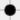
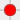

(for English scroll down)
Pajęczyna - prosta jednoosobowa gra, zwykle grana podczas nudnych lekcji
Zasady:
- Gra jest możliwa wyłącznie za pomocą myszki.
- Celem gry jest zdobycie maksymalnej liczby punktów.
- Punkt zdobywa się dodając nową kropkę na planszy tak, aby po połączeniu z istniejącymi czterema kropkami powstała linia - w pionie, poziomie lub po przekątnej.
- Gra kończy się w momencie gdy nie można już nigdzie dodać nowych kropek.
- Gra zaczyna się zawsze z początkowym wzorem w formie krzyża, a który w trakcie gry zaczyna przypominać tytułową pajęczynę.
- Dla ułatwienia gry miejsca, gdzie dozwolone jest postawienie nowej kropki oznaczane są na szaro w odróżnieniu od kropek czarnych już postawionych: 
- Kolor czerwony  oznacza wybraną kropkę, która musi być połączona z linią.
Spider's Web - a simple game usually played on a sheet of paper during boring lessons.
Rules:
- This game can only be played with a mouse
- The aim of the game is to achieve maximum number of points.
- To score a point the player needs to add a new dot to already existing four dots. They may be placed vertically, horizontally or diagonally.
Then, the player connect the dots to form a line.
- You lose when it is not possible to add a new dot.
- Game always starts with an initial cross-like shape, which during the game becomes similar to a spiders's web.
- To make game easier, places where a new dot can be placed are marked with grey color and those already marked are black:
- Red color indicates the chosen dot that has to form a line with other 4 dots.